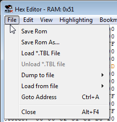
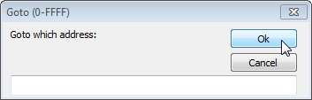

Содержание

Сохраняет измененный файл. Измененные байты, подсвеченные красным цветом в ROM File, окончательно запишутся в файл и снова станут черными, что не позволит отменить проделанные изменения.
Сохраняет изменнный файл с предложением выбрать имя файлу, тем самым создав отдельный файл с изменениями. Красные байты в ROM File останутся красными с возможностью отмены, даже если сохранить в тот же самый файл.
Подробнее про файл .tbl читай в подразделе.
Загружает файл .tbl, с помощью которого можно изменить кодировку, используемую при отображении байтов текстом в окне Hex Editor.
Выгружает файл .tbl, возвращая кодировку на стандартную. Опция становится доступной только при предварительно загруженном файле.
Создание файла .bin, состоящего из байтов выбранного в опциях диапазона. Эти файлы можно будет открыть любым Hex-редактором, а также использовать в некоторых сторонних программах.
Чтобы получить максимально точную информацию из адресов, нужно создавать файл во время паузы эмулятора, например после срабатывания брейкпоинта.
NES Memory $0000-$07FF.
PPU Memory $0000-$3FFF. Может быть использован в тайловых редакторах, так как содержит в себе информацию о тайлах, фоне и палитре.
OAM Memory $0000-$00FF.
NES Memory $0000-$FFFF.
Копирует байты из файла .bin в указанное место. Описание опций смотри выше.
Если файл больше размера выбранного диапазона, будут скопирован лишь максимально возможный диапазон. Если файл меньше размера диапазона, появится сообщение об ошибке, и байты скопированы не будут.
Окно Goto позволяет перейти на нужный адрес. Оно вызывается через Ctrl + A (или Ctrl + G).

В названии окна указан диапазон адресов текущего режима вкладки View. Введи адрес, нажми OK или Enter, и тебя перекинет на этот адрес.
Адрес не обязательно вводить заглавными буквами. Лишние нули слева можно опустить. Можно вводить адрес с префиксом 0x. При вводе недопустимого символа, все символы справа от него, включая неверный, будут удалены при вычислении адреса во время попытки перехода. Если самый первый символ неверный, или если превысить лимит диапазона, тебя перекинет на самый последний адрес.
Закрывает окно Hex Editor как после нажатия красного крестика.